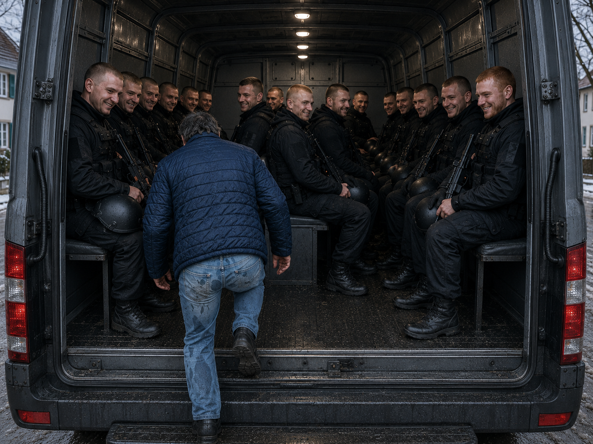

Dieter
Dieter is a member of the Immigration unit based in Germany.
His valuable experience and attention to detail have been recognised, and he has been entrusted with helping develop — or at least beta test — a new technology.
In the story
In Rhineland-Palatinate, Dieter is assisting a field team investigating what they believe to be a methamphetamine laboratory operating behind a centre connected with illegal immigration and people trafficking.
Normally Dieter is a meticulous and methodical officer, but the extreme weather conditions for the time of year force him to use his second vehicle — with rather embarrassing results.
See his trousers.
Despite the considerable offence this causes to his obsessive sense of order, Dieter eventually gets the job done.